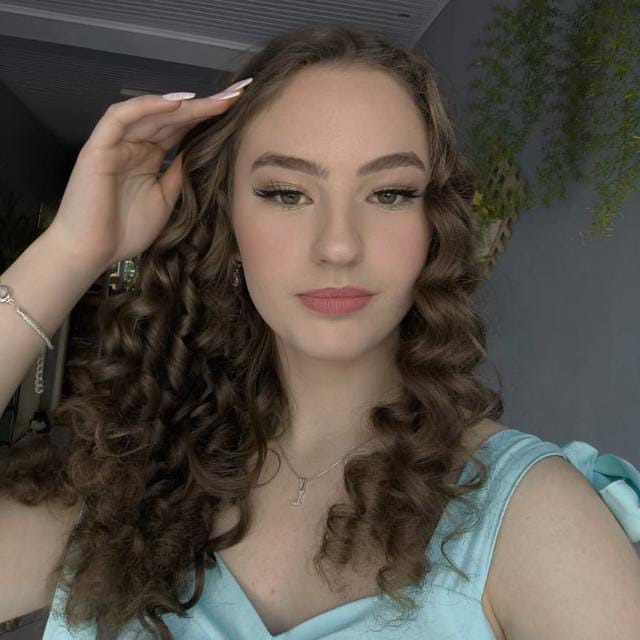
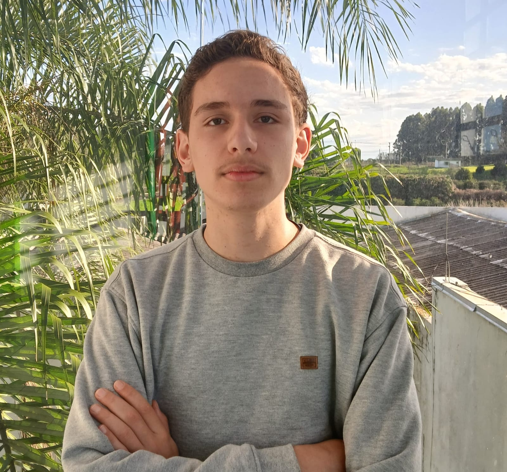
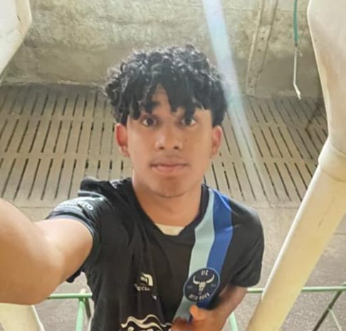

Sobre nós
Somos o Grupo 2 do Projeto Integrador da turma 1F, do ano de 2025. Nosso grupo é formado por Arthur Provenci, Cauã Nicolas, Eluan Fantin, Gustavo Kell, Guilherme Cerutti e Lara Appel. Neste trabalho, abordamos o tema "Livros digitais como aliados no cuidado da saúde mental dos adolescentes", destacando como a leitura pode contribuir positivamente para o bem-estar emocional dos jovens.
No que esse site ajuda?
O Book Heal é um fórum literário voltado para jovens que desejam se entender melhor e compreender o mundo por meio da leitura. Mais do que compartilhar livros, o espaço promove acolhimento, escuta e conversas significativas sobre saúde emocional, autoestima, identidade e outros temas da juventude. Inspirado por obras como Extraordinário e As Vantagens de Ser Invisível, o fórum convida os participantes a indicar leituras, tirar dúvidas e expressar sentimentos, construindo uma comunidade baseada no poder transformador das palavras.
Arthur Sarturi
Líder, principal fundador e indenizador do site, rede e fórum.

Lara Appel
Integrante, atuou na criação do "Home".

Guilherme Cerutti
Integrante, ajudante e organizador do site.

Gustavo Kell
Integrante, Atuou na criação do "Sobre nós".

Cauã Nicolas
Integrante, atuou na criação da Página inicial.